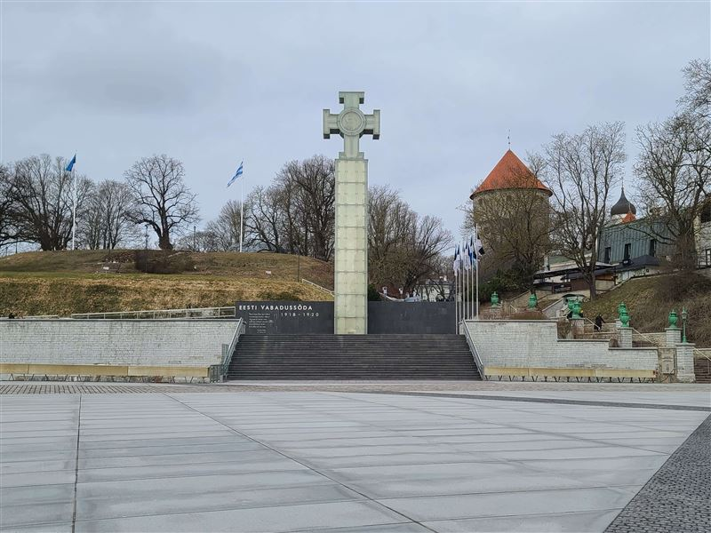
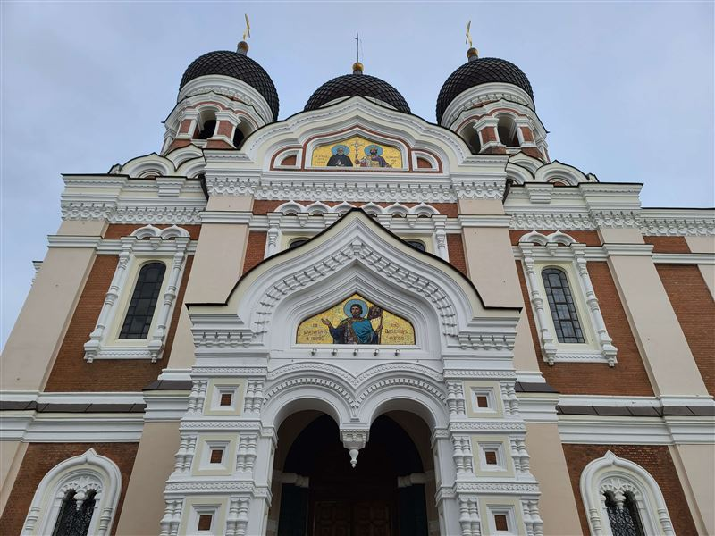
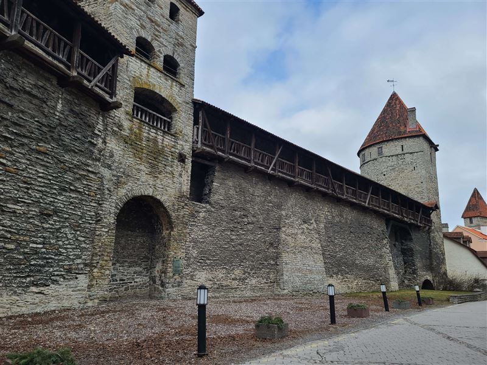
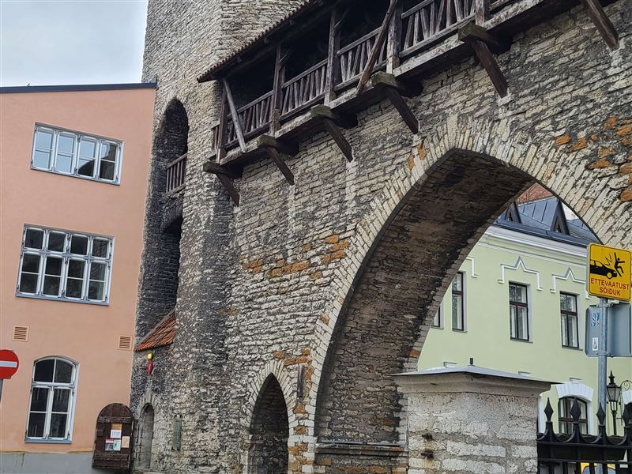
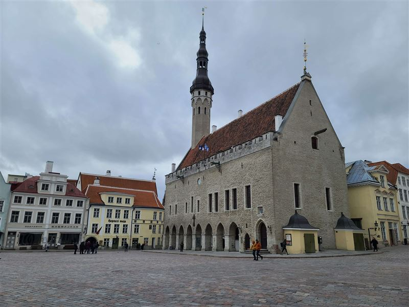
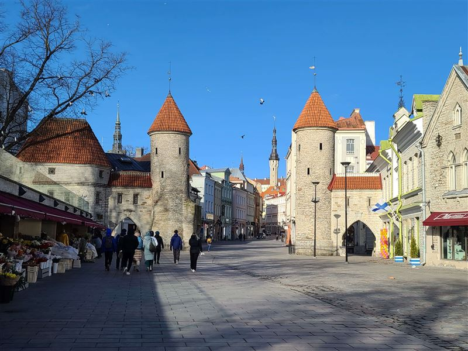
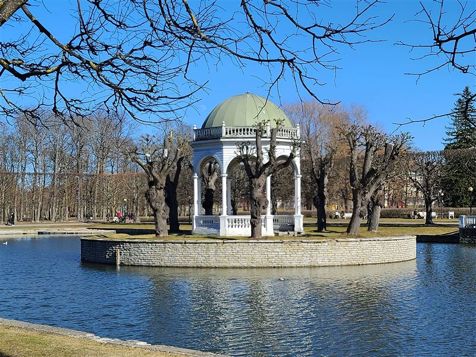
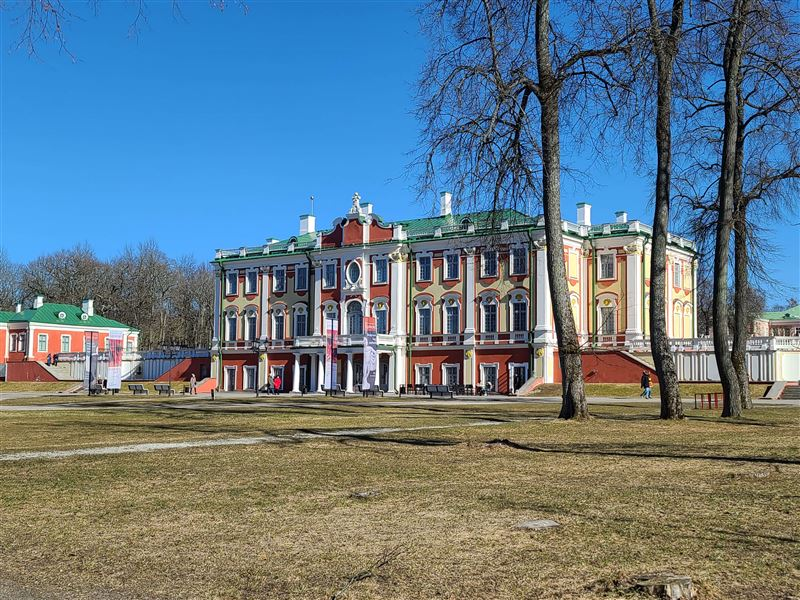

Explore Tallinn
A Brief History
Tallinn grew from a fortified settlement on the Gulf of Finland and became a major Hanseatic port in the Middle Ages. Its Upper Town, merchant streets, convent sites, and defensive walls reflect Danish, German, Swedish, Russian, and Estonian periods. The preserved Old Town is now part of a UNESCO World Heritage Site.
Attractions Map
Top Sights & Activities

FreeFreedom Square
Freedom Square marks the southern edge of Tallinn's Old Town and took its present form after repeated redesigns in the 20th and 21st centuries. The square includes the War of Independence Victory Column and serves as a civic space for national ceremonies, gatherings, and public events.

FreeAlexander Nevsky Cathedral
Alexander Nevsky Cathedral was built between 1894 and 1900 during the Russian Empire. Its onion domes and richly decorated facade stand on Toompea Hill opposite the parliament complex. The cathedral remains the main Russian Orthodox church in Tallinn.

€16Nun Tower and Walls
The Nun Tower section belongs to Tallinn's medieval city wall system, much of which took shape from the 14th century onward. Today the fortification route forms part of the Kiek in de Kok museum complex and shows towers, passages, and ramparts used in urban defense.

FreeMonastery Gate
Monastery Gate is one of the surviving access points tied to the Dominican monastery precinct in Tallinn's lower town. The surrounding lane preserves the medieval street pattern of convent buildings, merchants' plots, and defensive walls near Vene Street.

€8Tallinn Town Hall
Tallinn Town Hall is a Gothic civic building first mentioned in the 14th century and rebuilt in its present form by the early 15th century. It anchored the marketplace of the Hanseatic town and remains one of the major surviving medieval town halls in Northern Europe.

FreeViru Gate
The Viru Gate towers are the surviving outer structures of a once larger gate system on the eastern side of Tallinn's lower town. Their present form recalls the medieval defenses that controlled movement between the merchant town and roads leading beyond the walls.

FreeLuigetiigi Pavilion
Luigetiigi Pavilion stands in Kadriorg Park, the baroque parkland laid out for the Kadriorg palace ensemble founded by Peter the Great in the early 18th century. The pavilion and pond area form part of the landscaped public spaces that later became one of Tallinn's main urban parks.

€14Kadriorg Art Museum
Kadriorg Art Museum is housed in the baroque palace commissioned by Peter the Great for Catherine I from 1718 onward. The museum presents early foreign art within the palace interior and links imperial architecture with the later museum history of Kadriorg.